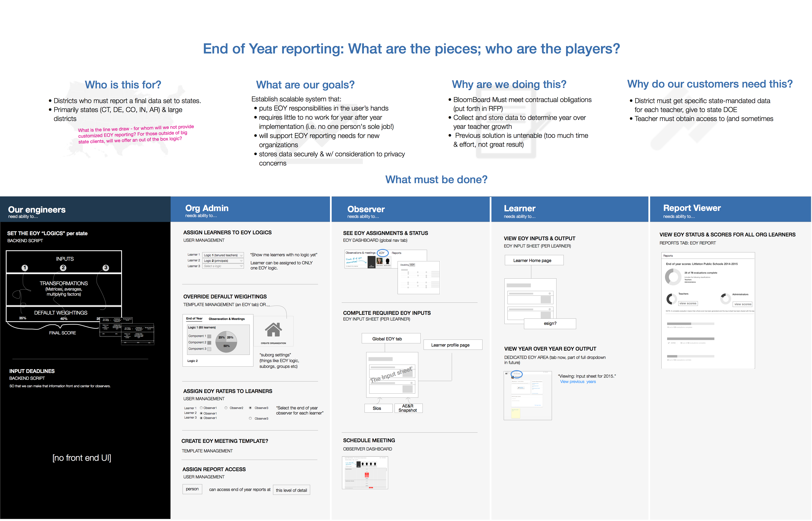
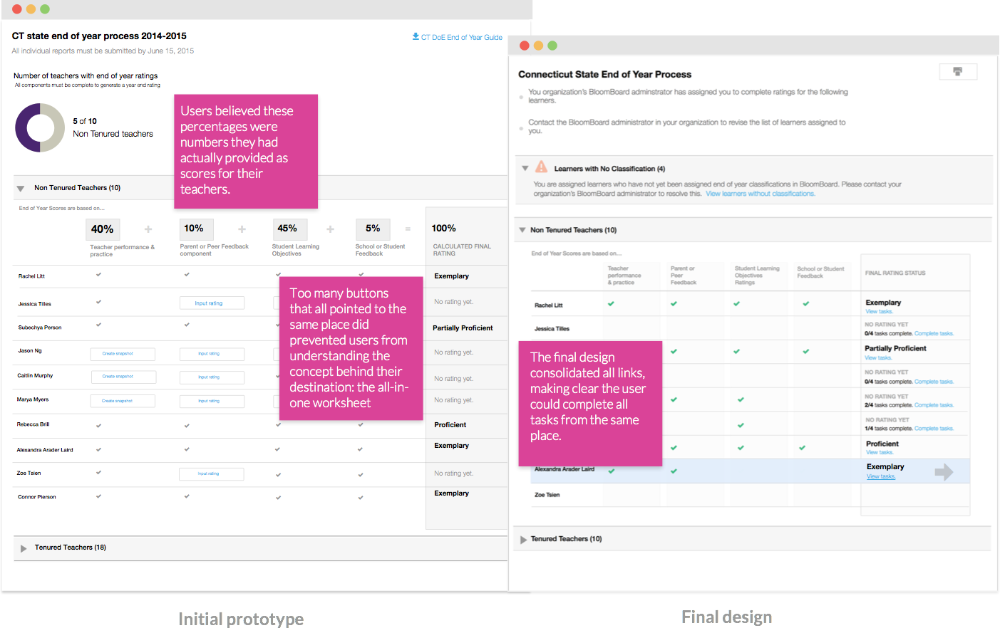

Mapping user and technical requirements
The new toolset needed to meet a diverse set of state and district requirements, but the company had little development time to devote to the project. Acknowledging that time constraints would prevent us from building a perfectly reusable system, I worked with the product manager to identify the core pieces to optimize. Our team's solution was reusable mix-and-match front end components served by custom back-end scripts specific to each state. I created a high-level requirements map for the company to understand the solution, and to serve as a guide throughout the development process.

Concept validation: prototypes & remote user testing
In conjunction with an engineer and data specialist, I developed clickable design prototypes for remote user testing of the new flow. We focused our research on obtaining feedback on our two primary goals: ensuring the evaluator task flow was crystal clear, and making transparent the derivation of the final score. As a result of user testing, we were able to confirm that a dedicated end-of-year progress dashboard made the task set clearer. We were also able to simplify the evaluator dashboard quite a bit, allowing the user to maintain focus on the outstanding tasks.

Mix-and-match front end components to create a single location for inputs
The keystone of the project was the worksheet, which displays the various components that comprise each educator's final score. Based on ran analysis of state and district calculation formulas, I identified common tasks evaluators needed to complete in order to generate scores — what we called “input components.” The result was a design for reusable front-end components that, in various permutations, allowed us to create one single end-of-year worksheet for each educator.